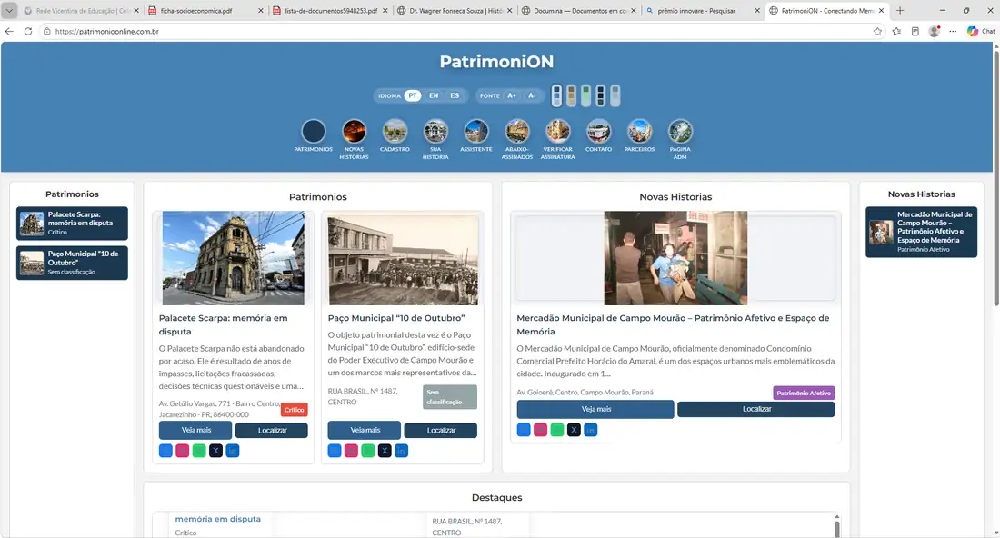
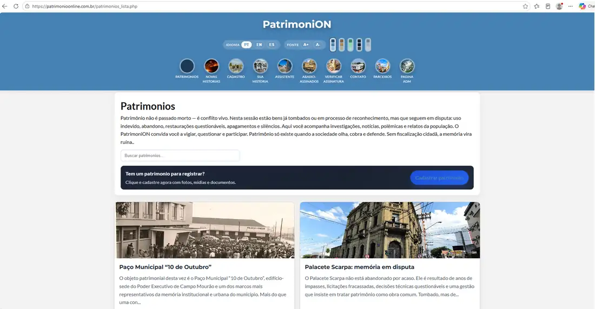

Direito
Instituições, contratos, cultura e proteção de interesses coletivos.
Perfil multidisciplinar · Campo Mourão, Paraná
Cientista e pesquisador Professor Tecnólogo Mestre em História Pública Graduando em Direito
Tecnologia para resolver. História para compreender. Direito para transformar.

Instituições, contratos, cultura e proteção de interesses coletivos.
Memória, pesquisa, patrimônio cultural e História Pública.
Infraestrutura, automação e desenvolvimento de soluções digitais.
Perfil profissional
Sou cientista, pesquisador, professor e tecnólogo, Mestre em História Pública e graduando em Direito. Minha trajetória conecta redes, servidores, segurança, suporte e desenvolvimento de soluções digitais à pesquisa histórica, à preservação do patrimônio e à compreensão das instituições.
Atuo no serviço público municipal com administração de redes, servidores, Linux, firewall, Active Directory, conectividade e atendimento técnico. Transformo necessidades reais em soluções funcionais, documentadas e sustentáveis.
“A tecnologia ganha valor quando melhora processos, preserva conhecimento e aproxima as instituições das pessoas.”
Atuação interdisciplinar
Atuação em assessoria técnica, pesquisa e apoio institucional, reunindo formação histórica, experiência tecnológica e estudos jurídicos para desenvolver soluções responsáveis, documentadas e socialmente relevantes.
Assessoria técnica em preservação, inventário, memória institucional, documentação, comunicação pública e valorização de bens culturais.
Planejamento, estruturação, pesquisa, diagnóstico, organização documental e desenvolvimento de projetos culturais e educativos.
Pesquisa aplicada, apoio técnico, elaboração de requisitos, análise documental e acompanhamento institucional, especialmente em tecnologia, cultura e patrimônio.
Estudos e produção técnico-científica sobre políticas culturais, proteção do patrimônio, direitos difusos e relações entre memória, sociedade e instituições.
Pesquisa e apoio técnico-institucional em organização, processos, contratos e transformação digital, respeitados os limites da formação jurídica em andamento.
Desenvolvimento de pesquisas, relatórios, produtos educacionais, soluções digitais e projetos interdisciplinares orientados a problemas reais.
Nota profissional: os serviços descritos têm natureza técnica, acadêmica, cultural e institucional. Não constituem advocacia, representação judicial ou consultoria jurídica privativa.
Experiência
Tecnologia pública
Administração de redes, servidores, Active Directory, Linux, firewall, VPN, racks e suporte remoto e presencial para aproximadamente 115 unidades e 3 mil servidores públicos.
Conectividade
Projetos com Mikrotik, VLANs dedicadas para imprensa, palco e público, hotspot, controle de tráfego e organização de conectividade em ambientes de alta demanda.
Telecomunicações
Experiência com alarmes, câmeras, antenas, portões automatizados, distribuição de TV e implantação de infraestrutura técnica em organizações de diferentes portes.
Pesquisa e patrimônio
Pesquisa, produção de conhecimento e iniciativas digitais voltadas à memória, ao patrimônio cultural, à participação social e à comunicação pública da História.
Portfólio
Aplicativo para converter e organizar PDFs localmente, preservando os documentos e entregando conteúdos em PDF, Markdown, DOCX, JSON e TXT.
Plataforma digital de História Pública que conecta memória, patrimônio cultural e participação social. O projeto reúne registros patrimoniais, novas histórias, localização, classificação, acessibilidade e colaboração da comunidade em uma experiência pública e responsiva.


Solução interna para organizar solicitações, acompanhar atendimentos e substituir processos fragmentados por um fluxo rastreável.
Integração de CUPS, Samba, Active Directory e GPO para instalação, controle e auditoria centralizados de impressoras.
Segmentação de redes com Mikrotik e VLANs, priorização de tráfego e acesso controlado para equipes, imprensa e público.
Formação
Uma formação que amplia a capacidade de interpretar problemas técnicos, sociais e institucionais.
Centro Universitário Integrado · Bolsa integral conquistada em concurso de bolsas.
Universidade Estadual do Paraná — UNESPAR · Pesquisa em História, memória e patrimônio.
Aperfeiçoamento em proteção de ambientes, redes, sistemas e informação.
Conhecimentos aplicados a educação, processos institucionais, licitações e compras sustentáveis.
Competências
Linux · Firewall · Redes · Servidores · Active Directory · CUPS · Samba · GPO
Mikrotik · VLAN · VPN · Hotspot · Controle de tráfego · Diagnóstico
MVPs · Automação · APIs REST · Documentação · Organização de dados
História Pública · Patrimônio cultural · Pesquisa · Gestão pública · Direito em formação
Conexões profissionais
Estou aberto a conexões, parcerias, projetos e oportunidades que aproximem tecnologia, instituições, história e inovação.